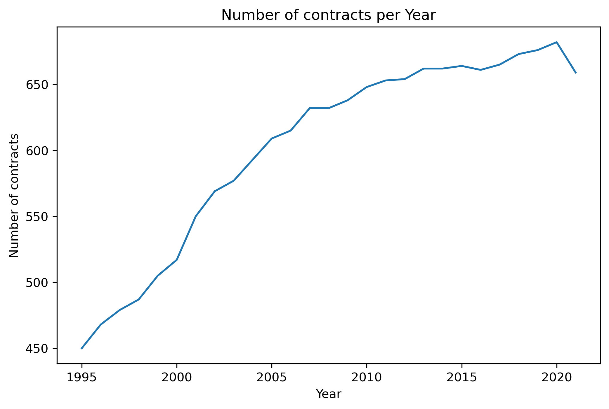
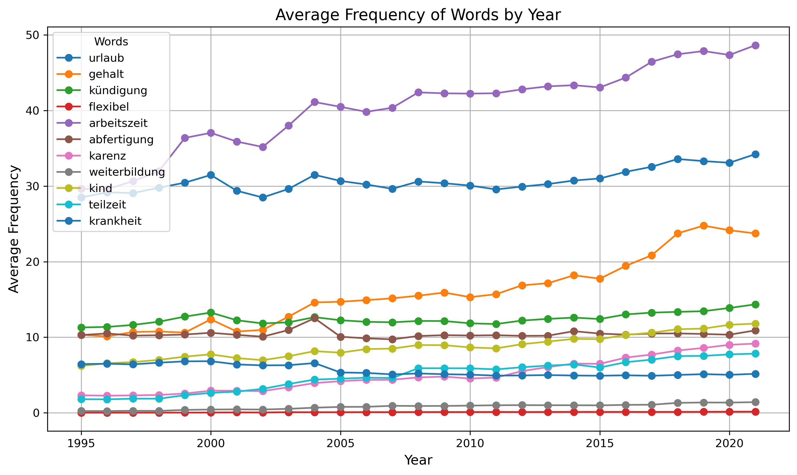

Collective bargaining agreements play a crucial role in shaping the Austrian labor market, serving as key instruments for regulating employment conditions, wages, and labor relations across various sectors. These agreements are negotiated between trade unions, representing the interests of workers, and employers' organizations, aiming to strike a balance between the two sides of the labor market. In Austria, collective bargaining enjoys a high level of institutionalization, with over 95% of workers covered under these agreements. This comprehensive coverage ensures that even those not directly affiliated with unions benefit from the standards set in Collective bargaining agreements. Across all industries, there are more than 800 collective bargaining agreements active in Austria, and this large number as well as the complexity of every single agreements has so far impeded a systematic analysis of their role and development in the economics literature. This project seeks to fill this gap by providing a first tentative and descriptive analysis of collective bargaining agreements in Austria. The data source for the agreements used in this project is the “KVSystem” portal of the Austrian ÖGBVerlag, the publishing house of the main Austrian trade union. Access to this database has kindly been provided by the ÖGBVerlag. The database covers all collective bargaining agreements across sectors in recent decades, which are provided to the user through a search engine.
As a first step to scraping the contracts from the database, we need to create a comprehensive list of all existing collective bargaining agreements that are of interest to us. To this end, we use a dynamic webscraping process, that searches for all agreements negotiated in Austria from 1995 to 2020 using the KVSystem search engine. The search results consist of a long list of links to the main page covering each individual contract. This list is stored in a dataframe and saved as a csv-file using BeautifulSoup. Next, we use the list obtained above to scrape every single contract. Each contract generally consists of a main framework (”Rahmen”), and up to 20 different attachments, appendices, or side contracts. In order to cover all the information, the scraping algorithm first takes a snapshot of the main contract website, and identifies the number of pieces that make up the contract. Afterwards, all individual parts are accessed, the contract saved in a separate file both as text as well as the entire html code.
We are now able to perform some very first descriptive analysis of the data obtained. In total, we have scraped over 16.000 collective bargaining agreements over a span of 25 years, with an average of about 650 contracts per year. The total number of documents scraped however amounts to more than 54.000, owing to the fact that, as outlined above, every agreements consists of multiple documents, with every main agreement on average containing 2.3 additional documents.
We can also start to perform some rudimentary text analysis. One interesting question to ask ourselves is whether we can find any trends in the relative importance of different topics in the collective bargaining agreements. For this purpose, we lemmatize all words in our contracts using the spacy package and its module “de_core_news_md”. We then count the number of times some interesting words appear in the contracts, and calculate the average number of occurrences per year across all contracts. The results are shown in the figure below.

We can see that some topics increase in relative importance over the years analyzed, reflecting their increasing relevance to workers and a change of priorities. For example, we see a rise of frequency of words such as “working time”, “part time”, or “flexible”, which can be interpreted as signs of a rising importance of work-life balance and the regulation thereof. Moreover, words relating to parental leave (such as “parental leave” or “child”) become more frequent as well. The same is true for the word “additional training”, plausibly indicative of the increasing need to continuously update worker’s skillset in the modern labor market. Finally, one line rising strongly is simply “wage”, whose importance for workers and firms alike we refrain from justifying in detail.